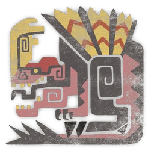
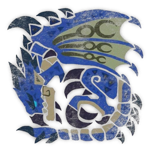
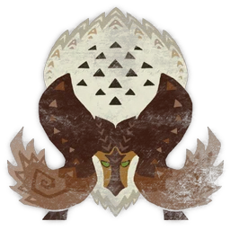
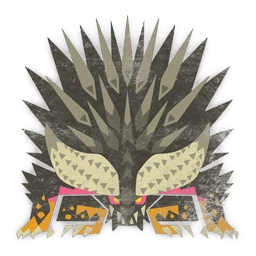
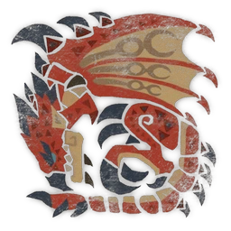
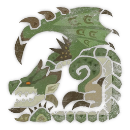
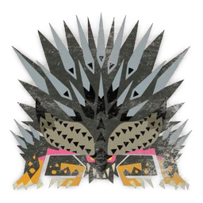

Estrutura da A (tabelas com fios, seções numeradas, um só acento) em tema escuro · títulos em IM Fell English SC, números em Averia Serif Libre, texto em Atkinson Hyperlegible · fraquezas com estrelas e símbolos dos elementos, carimbo da C · régua de HP da B. Dados reais do Rathalos (World: Iceborne).
O brasão da World fica reconhecível; o da Rise vira uma mancha vermelha (o dragão fica atrás das letras no logo original) e o da Wilds só mostra parte do emblema.
Os três logos inteiros (46 px de altura), reconhecíveis na hora. Abas inativas ficam apagadas; a ativa em cor cheia com o sublinhado dourado.







| Visão | Enxerga |
| Cápsula de lampejo | Afeta |
| Armadilha de choque | Afeta · 8 s |
| Entalhe | |
| Carapaça de Rathalos+ | 32% |
| Escama de Rathalos+ | 25% |
| Quebrar cabeça | |
| Rubi de Rathalos | 3% |
| The Heralds of Destruction Cry | |
| Nergigante Ticket | 100% |
| Sullied Streamstone | 11% |
| Nergigante Gem | 5% |